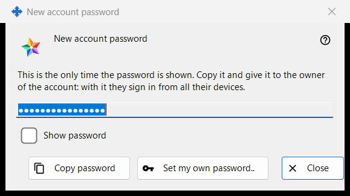
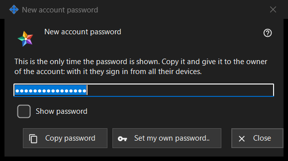

New account password
What this is for
Shows or asks for the password of an exchange server account, in three modes: Generated shows a password the program just made, once (the picture); Typed asks for a password of your own; Kept shows a password stored on this PC. It opens in the local exchange server settings of the Share Manager after 'Add an account..', 'Reset password..' or 'Set shared password..', and from the administrator password questions.


In this order
- Generated: press 'Copy password' (tick 'Show password' to read it), give the password to the account owner and press 'Close'.
- Own password: press 'Set my own password..' or choose 'Type a password myself', type a password that meets the rule and press 'Save password'.
- Kept: select the account and press 'Show password..'.
The elements
Generated password (in the picture)
Caption 'New account password'. The intro says: 'This is the only time the password is shown. Copy it and give it to the owner of the account: with it they sign in from all their devices.' The field is masked and read-only; 'Show password' reveals it in this window only. 'Copy password' puts it on the clipboard through a protected route that keeps it out of the Windows clipboard history and the cloud clipboard, and answers 'The password is copied.'. The field is emptied when the window closes.
Closing without copying
If you close a generated password that you neither copied nor showed, the program asks 'Close without copying the password?' and adds that it cannot be shown again - afterwards it can only be reset. The default answer is No. When the password is kept on this PC no question is asked.
Set my own password..
Used from the account window, the shared invitation password window and the administrator password window: closes this window without using the generated password and asks again, now for a password that you type, which replaces the generated one.
Typed password
Caption 'Account password', label 'Password:', a masked field and 'Show password'. Hint: 'At least 10 characters, with an upper-case and a lower-case Latin letter and a digit.' As you type, a warning line says what is missing, for example 'At least one digit is needed.'. 'Save password' refuses a password that fails the rule; one that passes goes back to the window that asked, and the server still has the last word.
Kept password
The caption adds the login to 'Account password'. The window shows the password stored on this PC, read-only, with 'Show password' and 'Copy password'; nothing is asked on close. It opens with 'Show password..' on the accounts list, which appears only while the switch 'Keep account passwords on this PC' is on. The switch is off by default; turning it on asks first, and the password is then stored encrypted for your Windows account, readable by any program running under it. A password set before the switch was turned on is not kept.
Manager settings · SFTP sharing settings · Exchange server settings